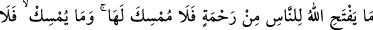
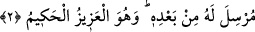

babasının sürüsünü otlatan çobana rastladı. Atını ve av malzemelerini çobana verdi ve
onun yün elbisesini alıp giydi. Sonra yollara, vâdilere ve çöllere düştü. Sonra da
matlubuna vâsıl olup dostunu buldu.
Yine rivayete göre Ebü’l-Fevâris Şâhin b. Şücâ el-Kirmânî (r.a.) de bir gün ava
çıktı. Kendisi Kirman sultanıydı. Dikkatlice av ararken sonunda tek başına bir sahrâya
düştü. Sahrâda bir canavarın üzerine binmiş ve etrafını canavarların kuşatmış olduğu
bir genç gördü. Canavarlar Kirman sultanını görünce ona doğru koşuştular. Bu genç
canavarları ondan alıkoydu. Genç, Kirman sultanına yaklaşıp selam verdi ve “Ey
padişah! Bu, Allah’tan ne gaflettir? Dünya ile meşgul olup âhireti bıraktın. Lezzet ve
nefis ve heva ile meşgul olup Mevlâ’nın hizmetini bıraktın. Allah Teâlâ bu dünya
saltanatını onunla kendisine hizmet etmekte yardım görmen için sana verdi. Sen ise
bu saltanatı Mevlâ’dan meşgul olmaya vesîle yaptın!” dedi. Genç böyle konuşmaya
devam ederken elinde bir su kabıyla yaşlı bir kadın çıkageldi. Genç bu kabı alıp sudan
biraz içti. Kalanını da Kirman sultanına verdi, o da içti ve “Bundan daha leziz, daha
serin ve daha tatlı bir şey içmedim” dedi. Sonra o yaşlı kadın ortadan kayboldu. Genç,
“İşte bu dünyadır! Allah onu benim hizmetime âmâde kılmıştır. Ben bir şeye ihtiyaç
duyduğum zaman o şey aklıma gelir gelmez bu yaşlı kadın onu bana hemen hazırlayıp
getirir. Şu haber sana ulaşmadı mı ki; “Allah Teâlâ dünyayı yaratınca ona ey dünya,
bana hizmet edene sen de hizmet et. Sana hizmet edeni ise kendine hizmet ettir,
buyurmuştur.” Kirman sultanı bu durumu görünce tövbe etti ve yine olanlar oldu (Bu zat
da mânâ âleminin sultanı oldu).
İşte bu iki melik, Allah Teâlâ’nın kudretiyle melek oldular. Onlar hakkında “O,
yaratmada dilediği arttırmayı yapar” hükmü gelmiştir. Tevfik ve başarı veren
Allah’tır.
2. Allah’ın insanlara açacağı herhangi bir rahmeti tutup hapseden olamaz. O’nun
tuttuğunu O’ndan sonra salıverecek de yoktur. O, üstündür, hikmet sahibidir.
“Allah’ın insanlara açacağı” nimet, sıhhat, ilim ve hikmet gibi “herhangi bir
rahmeti tutup hapseden olamaz.” Yaratıklardan hiç kimse onu tutup hapsetmeye
muktedir olamaz. Çünkü Allah’ın verdiğine kimse engel olamaz. “O’nun tuttuğunu
O’ndan sonra salıverecek de yoktur.” Varlıklardan hiç kimse Allah’ın rahmetini
salıverip ulaştırmaya muktedir olamaz. Çünkü Allah’ın engellediğini kimse veremez.
“O, üstündür,” rahmetini açık tutması da bu cümleden olan dilediği bütün işlere
galibdir. Kimse onunla münazaa edemez. “hikmet sahibidir” dilediğini hikmet ve